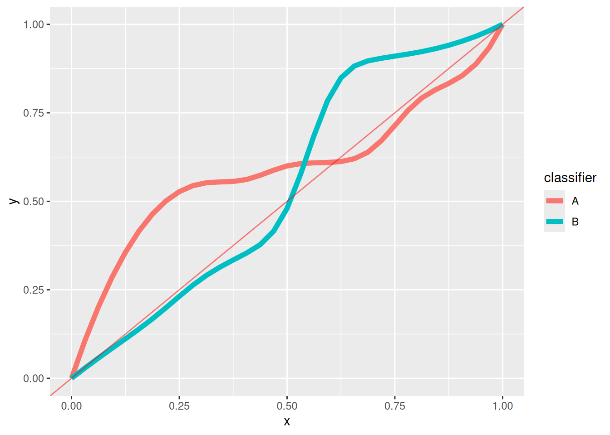
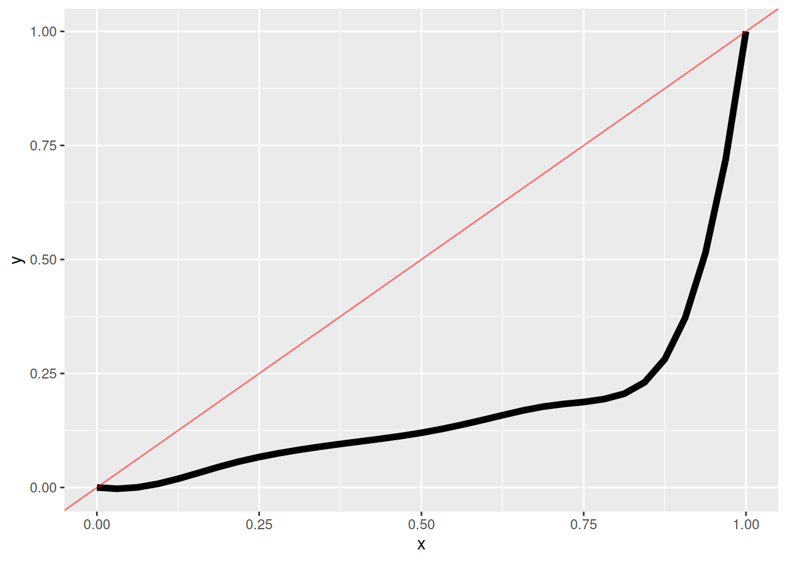

Homework 2
Stat 154/254: Statistical Machine Learning
Due Sunday October 11th (9pm)
1 Risk minimizers for general zero–one loss
Take \(y\in \{0, 1\}\), and consider the general misclassification loss
\[ \mathscr{L}(\hat{y}, y) = c_{01} \mathrm{I}\left(\hat{y}=0, y=1\right) + c_{10} \mathrm{I}\left(\hat{y}=1, y=0\right) - c_{00} \mathrm{I}\left(\hat{y}=0, y=0\right) - c_{11} \mathrm{I}\left(\hat{y}=1, y=1\right), \]
for postive \(c_{00},c_{11},c_{01},c_{10}\). In terms of these constants and \(\mathbb{P}_{\,}\left(y| \boldsymbol{x}\right)\), find a formula for the optimal classifier, \(f^{\star}(\boldsymbol{x}) = \underset{f}{\mathrm{argmin}}\, \mathbb{E}_{\mathbb{P}_{\,}\left(\boldsymbol{x}, y\right)}\left[\mathscr{L}(f(\boldsymbol{x}), y) \right]\).
2 ROC curves of bad classifiers
(a)
Let \(x\sim \mathcal{N}\left(0, 1\right)\) be drawn independently of \(y\in \{0, 1\}\). Plot the ROC curve for the family of classifiers \(\hat{f}(x| t) = \mathrm{I}\left(x> t\right)\) indexed by \(t\in \mathbb{R}^{}\).
(b)
Suppose you have two not–so–great classifiers, A and B, with the following ROC curves. How can you combine them to get a better one?
(c)
Suppose you have the a terrible classifier with the following ROC curve. How can you use it to make a really good classifier?

3 The behavior of logistic regression with a separating hyperplane
Consider logistic loss \(\hat{\mathscr{R}}(\boldsymbol{\beta})\) with regressors \(\boldsymbol{x}_n\) and binary responses \(y_n\). Suppose that the data is separable, meaning there exists a \(\boldsymbol{\beta}^{*}\) such that the data is perfectly classified by \(\boldsymbol{\beta}^{*}\):
\[ y_n = 1 \textrm{ if and only if }{\boldsymbol{\beta}^{*}}^\intercal\boldsymbol{x}_n > 0. \]
(a)
Show that the data is also perfectly classified by \(C \boldsymbol{\beta}^{*}\) for any constant \(C > 0\).
(b)
Write an expression for the loss \(\hat{\mathscr{R}}(C \boldsymbol{\beta}^{*})\). What happens to the loss as \(C \rightarrow \infty\)?
(c)
Can there be any solution to the equation \(\partial \hat{\mathscr{R}}(\boldsymbol{\beta}) / \partial \boldsymbol{\beta}= \boldsymbol{0}\)? (Recally that \(\hat{\mathscr{R}}(\boldsymbol{\beta})\) is convex, and so any such solution would be at a global minimum.)
(d)
What will happen if you try to numerically optimize \(\mathscr{R}(\boldsymbol{\beta})\), for example by gradient descent?
4 Logistic regression as Gaussian generative modeling
In this problem, we will derive a classification technique known as “linear descriminant anlalysis” (LDA). (Not to be confused with “latent Dirichlet allocation,” which is a completely different ML technique for topic modeling.)
Suppose that classification data follows a generative model
\[ p(\boldsymbol{x}\vert y= 0) = \mathcal{N}\left(\boldsymbol{x}| \boldsymbol{\mu}_0, \boldsymbol{\Sigma}\right) \quad\textrm{and}\quad p(\boldsymbol{x}\vert y= 1) = \mathcal{N}\left(\boldsymbol{x}| \boldsymbol{\mu}_1, \boldsymbol{\Sigma}\right) \]
for some covariance matrix \(\boldsymbol{\Sigma}\) and two vectors \(\boldsymbol{\mu}_0\) and \(\boldsymbol{\mu}_1\). Suppose also that \(\mathbb{P}_{\,}\left(y= 1\right) = \mathbb{P}_{\,}\left(y= 0\right) = 0.5\), marginally.
Recall that the multivarite normal density is given by
\[ \mathcal{N}\left(\boldsymbol{x}| \boldsymbol{\mu}, \boldsymbol{\Sigma}\right) = \exp\left( -\frac{1}{2}(\boldsymbol{x}- \boldsymbol{\mu})^\intercal\boldsymbol{\Sigma}^{-1} (\boldsymbol{x}- \boldsymbol{\mu}) - \frac{1}{2} \log |\boldsymbol{\Sigma}| + C \right), \]
where the normalizing constant \(C\) does not depend on \(\boldsymbol{x}\), \(\boldsymbol{\mu}\), or \(\boldsymbol{\Sigma}\). You may assume that \(\boldsymbol{\Sigma}\) is invertible and that the \(\boldsymbol{\mu}_1\) and \(\boldsymbol{\mu}_0\) are distinct.
In this problem, we will compute the optimal classifier in closed form for this setting.
(a)
Show that \[ \frac{\mathbb{P}_{\,}\left(y=1\vert\boldsymbol{x}\right)}{\mathbb{P}_{\,}\left(y=0\vert\boldsymbol{x}\right)} = \frac{\mathbb{P}_{\,}\left(\boldsymbol{x}\vert y=1\right)}{\mathbb{P}_{\,}\left(\boldsymbol{x}\vert y=0\right)}. \] Meaning, the posterior probability ratio equals the likehood ratio, in the case that the priors equal.
Hint: Use Bayes’ formula.
(b)
Express the log likelihood ratio \[ \log \frac{\mathbb{P}_{\,}\left(\boldsymbol{x}\vert y=1\right)}{\mathbb{P}_{\,}\left(\boldsymbol{x}\vert y=0\right)} \]
in terms of \(\boldsymbol{x},\boldsymbol{\mu}_0,\boldsymbol{\mu}_1,\boldsymbol{\Sigma}\), and show that it is affine in \(\boldsymbol{x}\).
(c)
Let \(\hat{f}(\boldsymbol{x})\) be the classifier that predicts the class with the higher posterior probability given \(\boldsymbol{x}\). Use (a) and (b) to show that \[ \hat{f}(\boldsymbol{x}) = 1 \iff \boldsymbol{x}^T\boldsymbol{\beta}^* > c^*, \] where \(\boldsymbol{\beta}^* =\boldsymbol{\Sigma}^{-1}(\boldsymbol{\mu}_1-\boldsymbol{\mu}_0)\), and \(c^*\) is a constant that depends on \(\boldsymbol{\mu}_0,\boldsymbol{\mu}_1,\boldsymbol{\Sigma}\) but not on \(\boldsymbol{x}\). Connect this conclusion to logistic regression.
5 Domain mismatch
A common problem in machine learning is when the distribution of your survey data does not match the distribution of the population in which you intend to use your predictor. Under misspecification, this can cause problems in general.
For this problem, we’ll explore a very simple example of domain mismatch in the context of classification. Dealing with this problem is the area of “domain adaptation.”
Suppose that both \(y\) and \(x\) are binary. We have two populations, the sample population \(p_s(x, y)\) which we observe, and which we learn our prediction function, and a target population \(p_t(x, y)\) on which we with to make predictions. For this problem, we’ll compare the exact risk minimizers for simplicity.
The data is distributed as follows. Let \(0 < \varepsilon < 1/4\). In both the sample and target, the distribution \(p(y\vert x)\) is the same:
\[ p(y= 1 \vert x) = \begin{cases} x= 0: & \varepsilon \\ x= 1: & 1 - \varepsilon. \end{cases} \]
In the sample, \(p_s(x= 1) = 1 - \varepsilon\), and in the target, \(p_t(x= 1) = \varepsilon\).
(a) Suppose we allow our prediction function, \(f\), to depend on \(x\), so \(f: \{0,1\}\mapsto \{0,1\}\). Since the distribution of \(y\) actually does depend only on \(x\), this model is correctly specified. Identify the sample population optimal classifier \(f_s^* = \underset{f}{\mathrm{argmin}}\, \mathscr{R}_s(f)\) where \(\mathscr{R}_s(f) = \mathbb{E}_{p_s(x, y)}\left[\mathrm{I}\left(f(x) \ne y\right)\right]\)?
(b) Now, as in (a), identify the target population optimal classifier, \(f_t^* = \underset{f}{\mathrm{argmin}}\, \mathscr{R}_t(f)\) where \(\mathscr{R}_t(f) = \mathbb{E}_{p_t(x, y)}\left[\mathrm{I}\left(f(x) \ne y\right)\right]\)?
(c) We would ideally like to use \(f_t^*\), but we only observe samples from \(p_s(\cdot)\), and so learn \(f_s^*\). What is the regret on the target population, \(\mathscr{R}_t(f_s^*) - \mathscr{R}_t(f_t^*)\)?
(d) Now, suppose we do not use \(x\) to form our predictions, but instead predict the same value, \(g\in \{0,1\}\), for every observation. Since the true distribution of \(y\) depends on \(x\), this model is misspecified. Under misspecification, what is the sample optimal classifier, \(g_s^* = \underset{f}{\mathrm{argmin}}\, \mathscr{R}_s(g)\) where \(\mathscr{R}_s(g) = \mathbb{E}_{p_s(x, y)}\left[\mathrm{I}\left(g\ne y\right)\right]\)?
(e) Now, as in (d), identify the target population optimal constant classifier, \(g_t^* = \underset{g}{\mathrm{argmin}}\, \mathscr{R}_t(g)\) where \(\mathscr{R}_t(g) = \mathbb{E}_{p_t(x, y)}\left[\mathrm{I}\left(g\ne y\right)\right]\)?
(f) What is the regret on the target population, \(\mathscr{R}_t(g_s^*) - \mathscr{R}_t(g_t^*)\), for the misspecified classifier?
(g) You should have gotten qualitatively different answers for (c) and for (f). Describe in ordinary language what went wrong.
(h) Imagine you are trying to design a classifier to detect infrequent events, such as very rare disease conditions. Connect the result above to how such a classifier might fail to be useful due to domain mismatch (recalling that essentially all ML models are misspecfied).
6 Proper scoring rules (254 only \(\star\) \(\star\) \(\star\))
In lectures, we showed that both squared loss and cross–entropy loss can be used as valid proxy loss functions for learning \(\mathbb{P}_{\,}\left(y\vert x\right)\) in classification problems. Gneiting and Raftery (2007) provide a complete characeterization of such loss functions, which they call (up to a sign change) “proper scoring rules.” (Their paper is very general, and they note that their results in the case of classification actually appeared in earlier work.) Note that Gneiting and Raftery (2007) define “scoring rules” as things that are better when they are higher, so we are looking for losses that are the negatives of proper scoring rules.
Specifically, let \(y\in \mathcal{Y}:= \{c_1, \ldots, c_K\}\) be a categorical variable, and let \(S_K\) denote the \(K\)–simplex, i.e., the set of all vectors \(\pi \in \mathbb{R}^{K}\) that satisfy \(\pi_k \in [0,1]\) and \(\sum_{k=1}^K \pi_k = 1\). A proxy loss function is of the form \(\mathscr{L}(\pi, y)\), that is, a function \(\mathscr{L}: S_K\times \mathcal{Y}\mapsto \mathbb{R}^{}\).
Suppose there is no \(x\) for the moment, and write \(\mathscr{R}_\mathscr{L}(\pi) := \mathbb{E}_{p(y)}\left[\mathscr{L}(\pi, y)\right]\). Then \(\mathscr{L}\) is the negative of a “stricly proper scoring rule” if \(\underset{\pi \in S_K}{\mathrm{argmin}}\, \mathscr{R}_\mathscr{L}(\pi) = p(y)\) — that is, if the risk minimizer is the true probability.
Theorem 2 of Gneiting and Raftery (2007) states that the negative of \(\mathscr{L}(\cdot, \cdot)\) is a strictly proper scoring rule if and only if there exists a strictly convex function \(g: S_K\mapsto \mathbb{R}^{}\) with subgradient \(g'(\cdot)\) such that
\[ -\mathscr{L}(\pi, c) = g(\pi) - g'(\pi)^\intercal\pi + \frac{\partial g(\pi)}{\partial \pi_c}. \]
Note the leading negative! (And if you don’t know what a subgradient is, don’t worry — when \(g\) is differentiable it’s just the gradient.)
Throughout, let \(\boldsymbol{z}\in \{0,1\}^K\) denote the one–hot encoding of \(y\) with \(\boldsymbol{z}_c = \mathrm{I}\left(y= c\right)\).
(a) Directly prove that \(\mathscr{L}_{sq}(\pi, y) = \sum_{c \in \mathcal{Y}} (\pi_c - \boldsymbol{z}_c)^2\) is the negative of a proper scoring rule by minimizing the risk.
(b) Directly prove that \(\mathscr{L}_{ce}(\pi, y) = -\sum_{c \in \mathcal{Y}} \mathrm{I}\left(y= c\right) \log \pi_c\) is the negative of a proper scoring rule by minimizing the risk.
(c) Using Theorem 2 of Gneiting and Raftery (2007), prove that \(\mathscr{L}_{sq}\) from (a) is the negative of a proper scoring rule. Hint: consider \(g(\pi) = \sum_{c \in \mathcal{Y}} \pi_c^2 - 1\).
(d) Using Theorem 2 of Gneiting and Raftery (2007), prove that \(\mathscr{L}_{ce}\) from (b) is the negative of a proper scoring rule. Hint: consider \(g(\pi) = \sum_{c \in \mathcal{Y}} \pi_c \log \pi_c\).
(e) Design a new loss function that is the negative of a proper scoring rule that we have not defined in class.
7 Exponential families and logistic regression (254 only \(\star\) \(\star\) \(\star\))
In this problem, we will show that logistic regression — and some of its nice properties — follow from general properties of a class of distributions known as exponential families.
Suppose that we have a probabilty distribution \(p(y\vert \eta)\) given by
\[ p(y\vert \eta) = \exp\left(y\eta - A(\eta) + H(y) \right). \]
For simplicity, let \(y\in \mathcal{Y}\) where \(\mathcal{Y}\) is discrete. (This is not essential to any of the results but allows us to write the problem without using any measure theoretic ideas.)
(a)
\[ \def\sumy{\sum_{y\in \mathcal{Y}}} \]
Show that, necessarily, \(A(\eta) ={} \log \sumy \exp(y\eta + H(y))\). The function \(A(\eta)\) is known as the “log partition function, and \(\eta\) is known as the”natural parameter.”
(b)
Define \(\mu(\eta) := \mathbb{E}_{p(y\vert \eta)}\left[y\right]\) and \(v(\eta) := \mathrm{Var}_{p(y\vert \eta)}\left(y\right)\). Using (a), show that
\[ \mu(\eta) = \frac{\partial A(\eta)}{\partial \eta} \quad\textrm{and}\quad v(\eta) = \frac{\partial^2 A(\eta)}{\partial \eta^2}. \]
(c)
Using (b), show that the first and second derivatives of the log likelihood are
\[ \frac{\partial \log p(y\vert \eta)}{\partial \eta} = (y- \mu(\eta)) \quad\textrm{and}\quad \frac{\partial^2 \log p(y\vert \eta)}{\partial \eta^2} = -v(\eta). \]
(d)
Suppose that we observe pairs \((\boldsymbol{x}_n, y_n)\), and model \(\eta_n := \boldsymbol{\beta}^\intercal\boldsymbol{x}_n\), so that the regressors linearly determine the natural parameter for the \(n\)–th observation. Show that the first and second derivatives of the observed log likelihood \(\hat{\mathscr{R}}(\boldsymbol{\beta}) := \frac{1}{N} \sum_{n=1}^N\log p(y_n \vert \boldsymbol{x}_n, \boldsymbol{\beta})\) are
\[ \frac{\partial \hat{\mathscr{R}}(\boldsymbol{\beta})}{\partial \boldsymbol{\beta}} = \frac{1}{N} \sum_{n=1}^N(y_n - \mu(\eta_n)) \boldsymbol{x}_n \quad\textrm{and}\quad \frac{\partial^2 \hat{\mathscr{R}}(\boldsymbol{\beta})}{\partial \boldsymbol{\beta}\partial \boldsymbol{\beta}^\intercal} = -\frac{1}{N} \sum_{n=1}^Nv(\eta_n) \boldsymbol{x}_n \boldsymbol{x}_n^\intercal. \]
Conclude that the negative observed log likelihood is convex as a function of \(\boldsymbol{\beta}\).
(e)
Show that the binary model \(p(y\vert \pi) = \pi^{y} (1 - \pi)^{1-y}\) is an exponential family of the above form. Identify \(\mathcal{Y}\), \(H(y)\), \(\eta\), and \(A(\eta)\). Show that the convexity of logistic regression loss minimization follows as a special case of (d).
(f)
Show that the Poisson model \(p(y\vert \lambda) = \exp(-\lambda) \lambda^y/ y!\) is an exponential family of the above form. Identify \(\mathcal{Y}\), \(H(y)\), \(\eta\), and \(A(\eta)\). Propose a method for “Poisson regression”, and show that the corresponding empirical risk is convex.
8 Bibliography
Gneiting, T., and A. Raftery. 2007. “Strictly Proper Scoring Rules, Prediction, and Estimation.” Journal of the American Statistical Association 102 (477): 359–78.